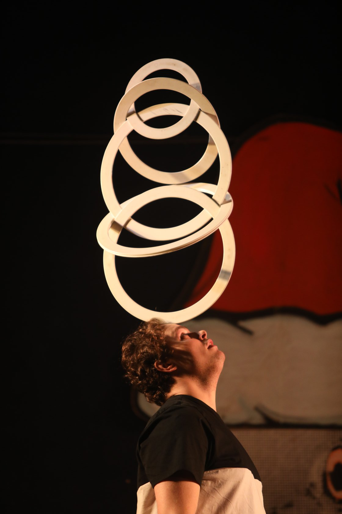
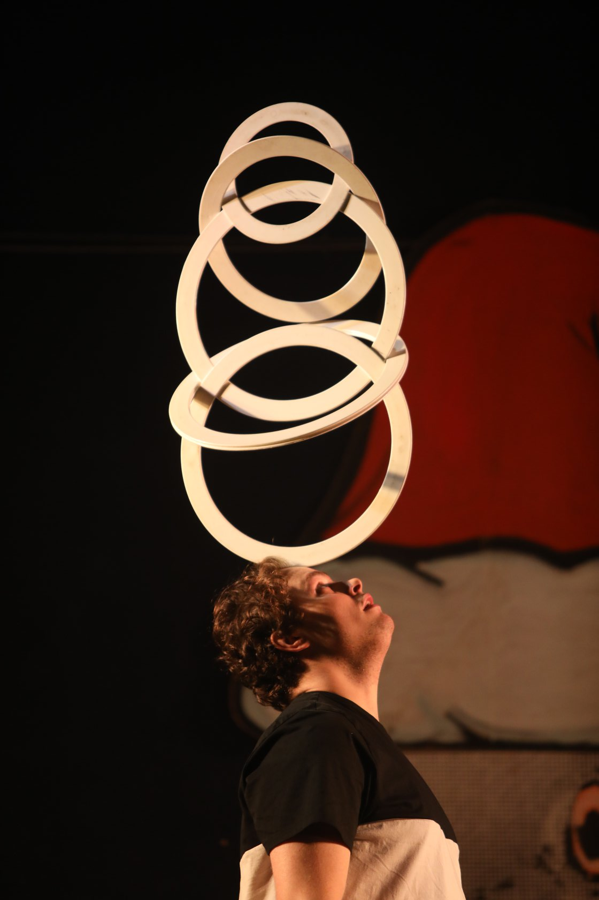

What is a Juggling Convention?
The biggest events in a jugglers calender are the conventions. Each one has their unique traits like the organisers, workshops and performers so no 2 conventions will ever be the same. However, each convention usually have the same list of events throuoghout the convention. Each convention will usually have workshops which are voluntarily led by attendees throughout the convention, a Gala show which is a whole host of professional performances from international and local guests, a renegade show which is a circus open mic night and circus themed games. The typical schedule for a circus convention is it takes place over a weekend, Friday afternoon to Sunday afternoon. Friday is usually some workshops and anything else that the organisers wish to put on like a secondary, show, a fire show or a little parade through the town square, to name but a few past ideas. Saturday usually has a lot more workshops from morning to early evening. Then attendees make their way to the location of the Gala show. After that, there is a short break and then the open mic night takes up the remainder of the night. Sunday has workshops going on from morning until early afternoon. After which the circus games commence and allow the community to engage their competitive side with a range of games, some requiring extreme technical skills and others just pure luck. Common games are 3 club gladiators, hula hoop racing and handstand endurance.
Freshers Fest
Initially set up by a UCD juggler by the name of Des Johnson in 2016, this convention focuses on new jugglers in Dublin and gives them a space to see first hand what their local jugglers can do and are encouraged that practise. The theme for the main Gala show is all the performers have never done a formal performance with their chosen prop, therefore enhancing the mantra that everyone at this, and every convention, are all newbies and constantly learning. There is no official page for this convention but it is run by the UCD circus and juggling society so check out their facebook page here for updates on this convention.
National Circus Festival of Ireland, Tralee
The NCFI takes place every year in the town of Tralee, Co.Kerry since 2001. This festival is possibly the biggest circus event on the Irish calendar, pulling talent from all corners of the globe into a tightly packed schedule. Recently, this festival has added an extra day of activity and normally runs from Thursday – Sunday every year. The Sunday evening parade and street shows in the town square have been entertaining kids and adults alike since it’s inception. For more information, visit their website with photos, videos, and past and future performers.
Belfast Juggling Convention
Previously hosted by the Queens Circus Society, this convention is also usually very popular with jugglers from the Republic of Ireland as it is just a short drive away. It allows attendees to witness performances by jugglers from the UK juggling scene and a handful of other international performers too who each have their own unique style. What the Belfast Juggling Convention does differently is on the Friday night, they host an “open stage” show which creates a space for performers to showcase a routine they are working on for a smaller audience than if they were to try and run at on a bigger stage, allowing them to get feedback from the audience and fine tune their routine. For more information, follow Queens Circus Society on Facebook
Dublin Circus Festival
The Dublin Circus Festival (previously named Dublin Juggling Festival) is a collaborative effort between the Dublin Circus Project and college circus societies. It is a way to bring Irish jugglers together and give everybody an excuse to play around with circus props around the capital. It’s Dublin’s way of giving back to the other circus groups who hold large conventions in other areas of Ireland, such as NCFI and the Belfast Juggling Convention. Follow their facebook page for updates
Galway Juggling Convention
Our final stop on our circus journey around the island of Ireland is in the west coast in the beautiful city of Galway. Hosted by the National University of Ireland, Galway (NUIG) circus society, this convention is normally a sunny escape taking place during the summer, in May or June. The Galway Juggling Convention has all the same thrills and frills as the other conventions with added fun and chill out time. Who doesn’t love a sunny escape to Galway? For updates, follow the Galway Circus Festival facebook page

 
